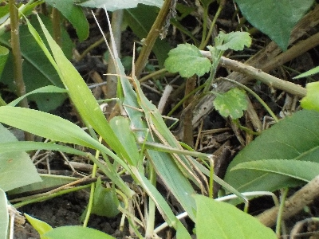
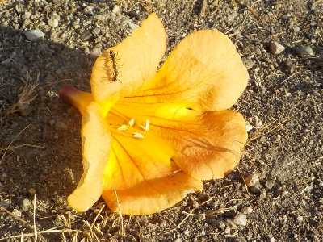
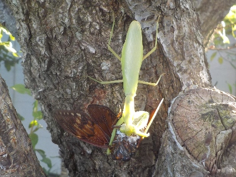
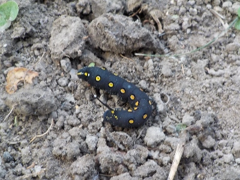
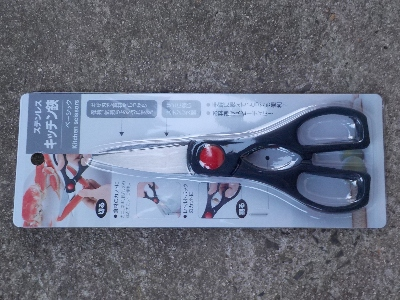

遊びで植物を育てよう
2024/08/31
オンブバッタの写真を撮りました。

なんか久しぶりにオンブバッタを見たので写真を撮りました。
人が近づいて逃げるときは分離して逃げればいいのに。
【8月TOP】
【日記TOP】
【園芸TOP】
2024/08/18
特に何もしないで夏休みが終わった。

何かやろうと思っていたわけではないですが、何もなく連休が終わりそうです。
だらだら過ごしたな。それはそれで幸せかな。
【8月TOP】
【日記TOP】
【園芸TOP】
2024/08/18
蝉が特別大きな声で鳴いていました。

蝉が大きな声で鳴いていたので、見てみるとカマキリに捕獲されていました。
自然なことです。
この前まで小さいカマキリがうろうろしていると見ていましたが、もうアブラゼミを食べるくらい大きくなったんですね。
【8月TOP】
【日記TOP】
【園芸TOP】
2024/08/04
草むしりをしていたら、この幼虫をよく見ました。

セスジスズメという名前の蛾の幼虫です。
今雑草を抜いているので、それらがなくなるのできっと野菜や花を食べに移動しますね。
【8月TOP】
【日記TOP】
【園芸TOP】
2024/08/01
セリアでキッチンハサミを買いました。

野菜の収穫用にハサミを買いました。園芸用よりもキッチンの万能ハサミの方が需要が多いので、コスパがいいんじゃないかと思い選びました。
ちょっと硬いものを切るとプラの部分が曲がって使いにくいですが、100均なので仕方ないのかな。
長く使えるといいです。
【8月TOP】
【日記TOP】
【園芸TOP】
過去の日記
【2024年8月の日記】
【2023年8月の日記】
【2022年8月の日記】
【2021年8月の日記】
【2020年8月の日記】
【2019年8月の日記】
【2018年8月の日記】
【2017年8月の日記】
【2016年8月の日記】
【2015年8月の日記】
【2014年8月の日記】
【2013年8月の日記】
【2012年8月の日記】
【8月TOP】
【日記TOP】
【園芸TOP】
夏場の活動は朝と夕です。
【おいしいものを食べよう。】【たくさん寝よう。】
【ソロ活をしよう!】【季節感のあることをしよう。】【動画視聴はほどほどに。】【当サイトの全てのコンテンツは無断転載禁止です。】